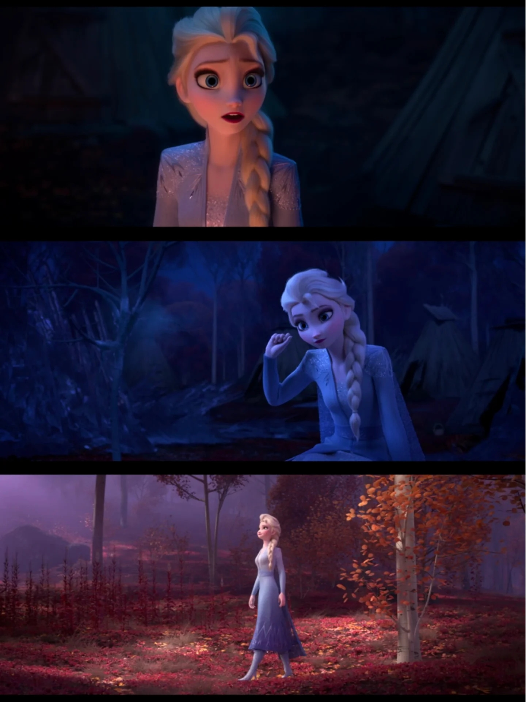

F2 开篇，艾莎在夜里听见一缕遥远的、似曾相识的声音。她想忽视却做不到——这首歌写的是「被召唤」的悸动，以及她本能地想要回应、却又害怕回应之间的矛盾。AURORA 唱出的 siren call（海妖呼唤）被作曲家 Christophe Beck 作为核心动机贯穿全片配乐，在艾莎驯服精灵、穿越暗海等关键时刻反复回响。
「I can hear you — but I won't / Some look for trouble while others don't / There's a thousand reasons I should go about my day / And ignore your whispers which I wish would go away」
我能听见你——但我不愿回应。有人自寻烦恼，有人不会。我有一千个理由继续过我的一天，无视你的低语，我希望它们消失。开篇即展现艾莎的矛盾：她明明听见了，却理性上拒绝回应。「a thousand reasons」是她作为女王的责任——她有王国要治理、有家人要保护，不能因为一个神秘声音就出走。
「You're not a voice / You're just a ringing in my ear / And if I heard you (which I don't) / I'm spoken for, I fear / Everyone I've ever loved is here within these walls / I'm sorry, secret siren, but I'm blocking out your calls / I've had my adventure, I don't need something new / I'm afraid of what I'm risking if I follow you」
你不是声音，你只是我耳中的鸣响。如果我听见了你（但我没有），我担心我已有所属。我爱的每一个人都在这些墙内。抱歉，神秘海妖，但我要屏蔽你的呼唤。我已经历过我的冒险，我不需要新的事物！我害怕如果跟随你，我要冒什么险。这段是艾莎「拒绝召唤」的完整心理——她用理性否定声音的真实性（「你只是耳鸣」），用责任否定出走的必要性（「我已有所属」），用恐惧否定冒险的价值（「我害怕要冒的险」）。但每一句否定都暴露了她内心的渴望。
「Into the unknown... / Into the unknown... / Into the unknown!」
深入未知……深入未知……深入未知！副歌从低吟到呐喊，是艾莎既恐惧又渴望的拉扯。「unknown」既是地理上的北方未知之地，也是心理上的「我是谁、我从哪来」的未知。
「What do you want? / 'Cause you've been keeping me awake / Are you here to distract me / So I make a big mistake? / Or are you someone out there who's a little bit like me? / Who knows deep down I'm not where I'm meant to be? / Every day's a little harder as I feel my power grow! / Don't you know there's part of me that longs to go...」
你想要什么？因为你让我夜不能寐。你是来让我分心，好让我犯下大错吗？或者你是外面某个与我有点相似的人？深知我内心深处并不属于这里？每一天都更难一些，因为我感到自己的力量在增长！你难道不知道，有一部分我渴望前去……这段是全曲的情感核心——艾莎从「拒绝」转向「追问」。「Or are you someone out there who's a little bit like me?」是她第一次承认：这个声音可能和自己有关。「deep down I'm not where I'm meant to be」是她对「阿伦黛尔女王」身份的深层质疑——她隐约觉得自己不属于这里。「Every day's a little harder as I feel my power grow」呼应了 F1 地精的警告「力量会随恐惧滋长」，但这里力量增长的原因不是恐惧，而是「被召唤」。
「Are you out there? / Do you know me? / Can you feel me? / Can you show me?」
你在外面吗？你认识我吗？你能感受到我吗？你能指引我吗？四个连续的追问，从「你是否存在」到「你是否认识我」到「你能否感受我」到「你能否指引我」——艾莎彻底从拒绝转向渴望，她想要答案。
「Where are you going? / Don't leave me alone! / How do I follow you / Into the unknown?」
你要去哪里？别留我独自一人！我如何跟随你，深入未知？结尾艾莎从「追问」转向「请求跟随」——她不再抗拒召唤，而是主动想要追随。这为她接下来北上寻找真相埋下了动机。
歌曲刻画艾莎的内心冲突：她反复听见一阵神秘呼唤，却理性上抗拒——「我能听见你，但我不愿回应」「我已有所属」「我不需要新的事物」。副歌「深入未知」是她既恐惧又渴望的拉扯：恐惧跟随呼唤所要冒的风险，又渴望前往「内心深知并不属于此处」的归属。正如迪士尼动画总裁 Clark Spencer 所言，它是一首「被召唤去做某事，却不知走向何方」的 anthem，鼓励人「follow your calling（追随你的召唤）」。
歌曲出现在艾莎夜不能寐、被暗海中传来呼唤纠缠的开场，直接启动续集主线：这阵声音引她离开阿伦戴尔、北上寻找 Ahtohallan 的真相。AURORA 唱出的 siren call 被 Christophe Beck 作为核心动机贯穿全片配乐，在艾莎驯服精灵、穿越暗海等关键时刻反复回响，把「呼唤」从一首歌延展为整个故事的听觉脊梁。
词曲由回归的 Kristen Anderson-Lopez 与 Robert Lopez 创作（二人亦参与续集故事开发）。据披露，原本为艾莎高潮戏写的是一首叫「I Seek the Truth」的歌；当「艾莎听见并追随神秘声音」这一关键情节被构思出来后，二人回到该场景改写成「Into the Unknown」。
北欧与萨米文化根基：这阵呼唤取材自拉丁圣咏「Dies irae（末日经）」的旋律素材，却以斯堪的纳维亚传统的「kulning（牧羊女呼唤调）」方式唱出；而贯穿全系列的萨米 joik 吟唱（开篇「Vuelie」、前作「Frozen Heart」）正是这股「北方呼唤」的音乐源头。影片还特别推出北萨米语（Northern Sami）配音版。
歌曲于 2019 年录制，由 Kristen Anderson-Lopez & Robert Lopez 与 Tom MacDougall、Dave Metzger 共同制作。一个著名的幕后花絮是：Idina Menzel 第一次试唱这首歌，是在一部 off-Broadway 戏剧的后台化妆间里，词曲作者拎着一台电子键盘为她伴奏。AURORA 的空灵声线被用作「神秘声音」，与 Menzel 极具戏剧张力的嗓音形成冷暖对照，成就了歌曲最标志性的对话感。
「Into the Unknown」获第 92 届奥斯卡金像奖、评论家选择奖、金球奖、卫星奖「最佳原创歌曲」提名，最终不敌《Rocketman》的「(I'm Gonna) Love Me Again」。2020 年奥斯卡颁奖礼上，Menzel 与 AURORA 联袂演唱，并由来自九种语言的九位「国际艾莎」（丹麦、德语、日语、欧洲西语、拉美西语、挪威、波兰、俄语、泰语）同台以母语合唱，成为经典瞬间。歌曲全球共有约 47 个语言版本；片尾还收录 Panic! At The Disco 的摇滚翻唱版。
评论普遍认为它成功承接了「Let It Go」的 anthem 使命，又呈现出更成熟、更 melancholy 的成人化艾莎。《每日电讯报》称其具备前作同样的抓耳特质，但是否能被年轻观众奉为新经典尚待时间检验。《纽约时报》则以「以 melancholy 与 power ballad 跟进《Frozen》」为题给予肯定。歌曲将流行摇滚编曲与北欧呼喊调融合，被赞「同样洗脑，却更有成长痛感」。